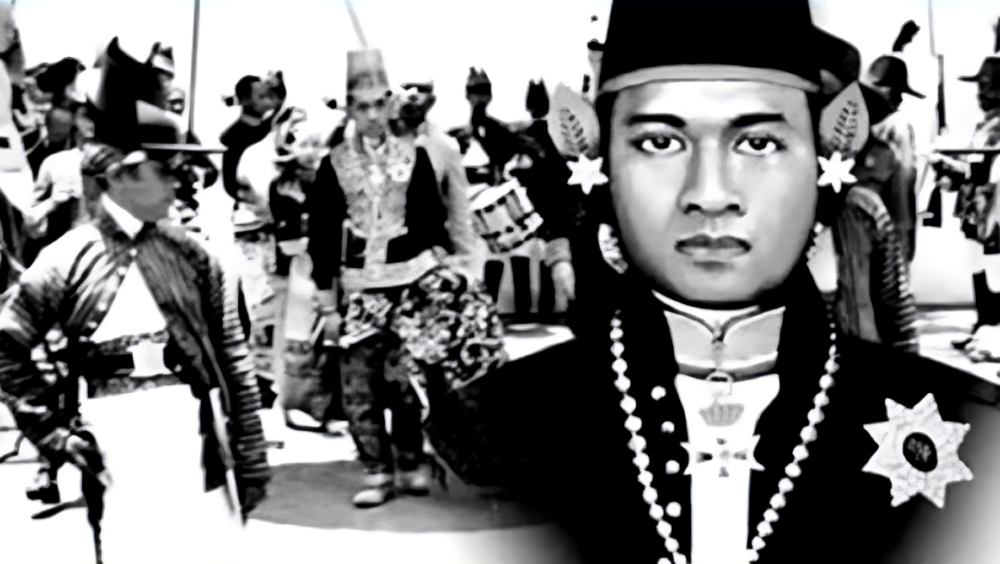

Sejarah
Hari Jadi Kabupaten Sragen ditetapkan dengan Perda Nomor : 4 Tahun 1987, yaitu pada hari Selasa Pon, tanggal 27 Mei 1746. tanggal dan waktu tersebut adalah dari hasil penelitian serta kajian pada fakta sejarah, ketika Pangeran Mangkubumi yang kelak menjadi Sri Sultan Hamengku Buwono yang ke- I menancapkan tonggak pertama melakukan perlawanan terhadap Belanda menuju bangsa yang berdaulat dengan membentuk suatu Pemerintahan lokal di Desa Pandak, Karangnongko masuk tlatah Sukowati sebelah timur.
Kronologi dan Prosesi
Pangeran Mangkubumi adik dari Sunan Pakubuwono II di Mataram sangat membenci Kolonialis Belanda. Apalagi setelah Belanda banyak mengintervensi Mataram sebagai Pemerintahan yang berdaulat. Oleh karena itu dengan tekad yang menyala bangsawan muda tersebut lolos dari istana dan menyatakan perang dengan Belanda. Dalam sejarah peperangan tersebut, disebut dengan Perang Mangkubumen (1746 - 1757).
Dalam perjalanan perangnya Pangeran Muda dengan pasukannya dari Keraton bergerak melewati Desa-desa Cemara, Tingkir, Wonosari, Karangsari, Ngerang, Butuh, Guyang. Kemudian melanjutkan perjalanan ke Desa Pandak, Karangnongko masuk tlatah Sukowati.
Di Desa ini Pangeran Mangkubumi membentuk Pemerintahan Pemberontak. Desa Pandak, Karangnongko di jadikan pusat Pemerintahan Projo Sukowati, dan Beliau meresmikan namanya menjadi Pangeran Sukowati serta mengangkat pula beberapa pejabat Pemerintahan.
Karena secara geografis terletak di tepi Jalan Lintas Tentara Kompeni Surakarta – Madiun, pusat Pemerintahan tersebut dianggap kurang aman, maka kemudian sejak tahun 1746 dipindahkan ke Desa Gebang yang terletak disebelah tenggara Desa Pandak Karangnongko.
Sejak itu Pangeran Sukowati memperluas daerah kekuasaannya meliputi Desa Krikilan, Pakis, Jati, Prampalan, Mojoroto, Celep, Jurangjero, Grompol, Kaliwuluh, Jumbleng, Lajersari dan beberapa desa Lain.
Dengan daerah kekuasaan serta pasukan yang semakin besar Pangeran Sukowati terus menerus melakukan perlawanaan kepada Kompeni Belanda bahu membahu dengan saudaranya Raden Mas Said, yang berakhir dengan perjanjian Giyanti pada tahun 1755, yang terkenal dengan Perjanjian Palihan Negari, yaitu kasunanan Surakarta dan Kasultanan Yogyakarta, dimana Pangeran Sukowati menjadi Sultan Hamengku Buwono ke-1 dan perjanjian Salatiga tahun 1757, dimana Raden Mas Said ditetapkan menjadi Adipati Mangkunegara I dengan mendapatkan separuh wilayah Kasunanan Surakarta.
Selanjutnya sejak tanggal 12 Oktober 1840 dengan Surat Keputusan Sunan Paku Buwono VII yaitu serat Angger – angger Gunung, daerah yang lokasinya setrategis ditunjuk menjadi Pos Tundan, yaitu tempat untuk menjaga ketertiban dan keamanan Lalu Lintas Barang dan surat serta perbaikan jalan dan jembatan, termasuk salah satunya adalah Pos Tundan Sragen.
Perkembangan selanjutnya sejak tanggal 5 juni 1847 oleh Sunan Paku Buwono VIII dengan persetujuan Residen Surakarta baron de Geer ditambah kekuasaan yaitu melakukan tugas kepolisian dan karenanya disebut Kabupaten Gunung Pulisi Sragen. Kemudian berdasarkan Staatsblaad No 32 Tahun 1854, maka disetiap Kabupaten Gunung Pulisi dibentuk Pengadilan Kabupaten, dimana Bupati Pulisi menjadi Ketua dan dibantu oleh Kliwon, Panewu, Rangga dan Kaum.
Sejak tahun 1869, daerah Kabupaten Pulisi Sragen memiliki 4 ( empat ) Distrik, yaitu Distrik Sragen, Distrik Grompol, Distrik Sambungmacan dan Distrik Majenang. Selanjutnya sejak Sunan Paku Buwono VIII dan seterusnya diadakan reformasi terus menerus dibidang Pemerintahan, dimana pada akhirnya Kabupaten Gunung Pulisi Sragen disempurnakan menjadi Kabupaten Pangreh Praja. Perubahan ini ditetapkan pada jaman Pemerintahan Paku Buwono X, Rijkblaad No. 23 Tahun 1918, dimana Kabupaten Pangreh Praja sebagai Daerah Otonom yang melaksanakan kekuasaan hukum dan Pemerintahan.
Dan Akhirnya memasuki Zaman Kemerdekaan Pemerintah Republik Indonesia , Kabupaten Pangreh Praja Sragen menjadi Pemerintah Daerah Kabupaten Sragen.
(Sumber : Sejarah dan Hari Jadi Pemerintahan di Kota Sragen, 1987)